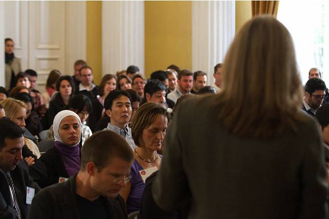

2011-11-14
CC General Counsel Diane Peters addressing affiliates / DTKindler Photo / CC BY
日前，CC全球高峰會聚集了來自世界各地CC相關人員及組織成員後，長達數日的高峰會在波蘭完美落幕。其中，約有300名法律背景的與會者在會中針對各國在著作權與政府、教育、科學、文化、基金會等各方面的關聯性，提供了深切且精闢的討論。以下將簡單摘要高峰會中對3.0版本的檢討以及4.0版的未來規畫：
一、從創用CC3.0到4.0
創用CC3.0條款自2007年上線以來，受到許多重要組織的認同，尤其是許多政府在過去四年，發布許多與政府政策相關的內容以及數據時，均使用創用CC3.0授權條款。隨著3.0版授權持續推行，在此過程中，CC工作人員發現，現存的某些著作權使用限制在未來亦可能造成對創用CC授權使用的阻礙，例如各國本地化後的創用CC條款以及歐盟特有的資料庫保護權(sui generis database rights)以及與該資料庫保護權相關之國際條約，均造成了創用CC使用者以及推廣上的困擾。雖然3.0版本出於「提供一個最開放並可行的授權」之目的而不斷改良與推廣，但CC工作人員發現，為了避免破壞既有的公眾領域，3.0授權版本仍有其改進的空間。故在本次高峰會中，集結了具有法律背景的與會者，率先討論未來4.0版本的可能發展方向。
二、4.0條款的第一步
在此情形下，Creative Commons現在主要成員暨發起人之Professor Mike Carroll提出了4.0條款的授權展望，並領導大家加入4.0的討論行列。他提出了以下幾個4.0版的發展重點，盼在2012年時能將創用CC授權更加發揚光大：
- 國際化：將授權內容更加易於使各國接受、更容易理解並得以通用於世界各國。
- 高度互通性：最大化創用CC授權與其他授權條款的相容性，樹立一個標準的授權條款並更加擴大創用CC的使用人數。
- 長效性：隨時注意各國立法變遷以及創用CC相關組織的動向，並盡可能保持與未來新授權條款的相容性。
- DATA/PSI/Science/Education：認識並解決各國政府在採用創用CC所面臨阻礙，同時與政府公開組織保持良好關係。
- 支持與既有架構：4.0授權仍將保持既有創用CC授權架構內容，並以不和既存架構衝突為目標。
三、 解決著作權的限制- -針對歐盟特有的資料庫著作保護權
創用CC原始設計是企圖透過「設置使用條件」的方式，盡可能開放授權並避免未來著作侵害的發生。即使該地的著作權規範甚嚴，一但使用者使用創用CC作品已符合創作者之授權條件，則不生侵害著作權之問題。但某些特殊權利規定與著作權有類似性或高度重覆性，此種權利是否可以一體適用創用CC授權，則成為本次高峰會討論的重點之一。本次高峰會以歐盟特有的資料庫保護權以及相關國際條約為討論主軸。歐盟所提出之資料庫保護權為飽受批評之政策，且經濟上亦欠缺實益，歐盟不應加強保護該種權利，而應將該權利開放給大眾使用。故許多與會者均支持創用CC未來將資料庫保護權列入可採用CC授權之範疇，並採用創用CC相同之授權條件，希望可以將資料庫保護權更加開放給大眾使用。未來創用CC 4.0條款之計劃，將會注意在納入資料庫保護權之時，不對其另行創造法未規定之義務，以免過度限制該特殊權利之利用範疇。另外，4.0版本將會提出對於教育使用更友善的內容，以免教育使用者在過度謹慎之下，而綁手綁腳。
四、更加國際化的授權條款
在3.0版條款以前，創用CC授權條款是基於美國著作權法而設計之通用條款。但直到3.0版，創用CC小組將條款基礎建構為得以適用多數國家著作權法及國際公約之內容，而在撰寫創用CC 3.0版本時，多次對於「是否該將授權本地化並翻譯為各國文字，以符合各國規範並有助推廣」之議題產生爭議，而最終推出的3.0版本則是分為美國版以及非本地化版，本地化的工作則留給了創用CC各國的成員進行。至於4.0版本，目前決定推出一個得以更加通用於國際的授權條款，以符合創用CC成立「國際授權」的概念。
五、非商業性的定義以及本授權條款的強制力
最後，創用CC授權條款對於「非商業性之定義」以及條款之「法律效果」也是4.0版本關注的重點。就非商業性之部份，雖然傾向將非商業性的範圍縮小，以促進作品之利用，但要修改非商業性之定義仍有難度；至於法律效果的部份，德國CC之著作人則有效地主張了創用CC授權條款之強制力[1]，故在撰寫4.0時，也會注意不要寫出與3.0版相衝突之法律效果。
十分感謝本次高峰會中提供意見的與會者，未來將會逐步揭露4.0條款之撰寫過程和意見討論，歡迎有興趣的朋友持續關注未來創用CC授權條款之發展！
[0] 節譯自Diane Peters, Copyright Experts Discuss CC License Version 4.0 at the Global Summit, http://creativecommons.org/?p=29639, last visited 2011/11/10.
[1] 詳細內容請見本網站部落格：http://creativecommons.tw/blog/20111003。